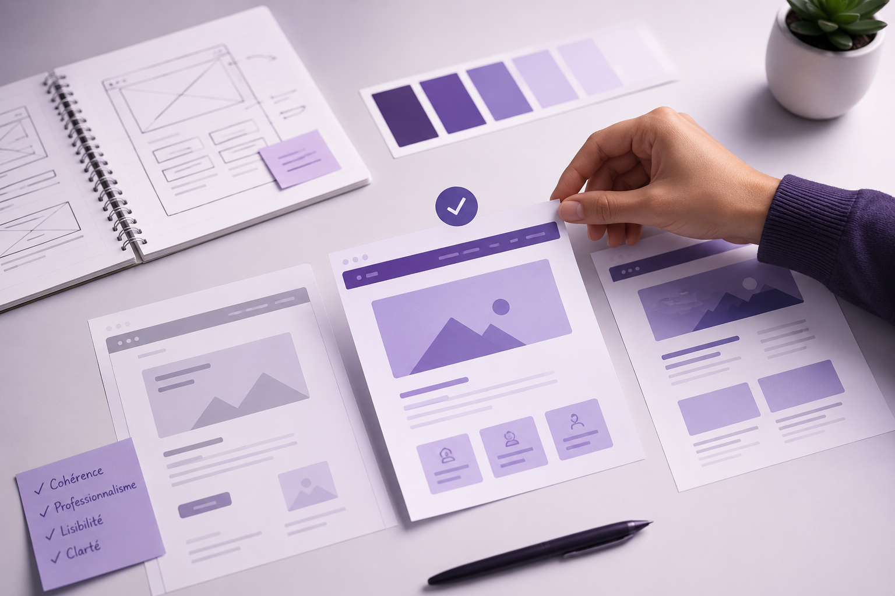

Organisez vos tâches simplement et efficacement
Une application pensée pour offrir une organisation simple, claire et moderne, avec une expérience agréable sur ordinateur comme sur mobile.
Gérez facilement vos tâches, vos priorités et vos objectifs dans une interface lisible et structurée, sans surcharge visuelle.
Une identité visuelle cohérente, des couleurs professionnelles et une mise en page aérée pour mettre en valeur l’essentiel.

Consultez vos listes, suivez votre progression et restez efficace où que vous soyez grâce à une interface adaptable.
Retrouvez le cahier des charges du projet ainsi que son avancement à travers une frise chronologique mise à jour au fil du temps.
Téléchargez le document de référence pour consulter les objectifs, les fonctionnalités attendues, les contraintes techniques et les étapes du projet.
Analyse du projet, des utilisateurs et des fonctionnalités principales.
Création du site internet, implémentation des premières fonctions
Mise en place de la page principale, de la connexion et des sections dynamiques.
Ajout de la gestion des tâches, amélioration de l’expérience utilisateur.
Corrections, optimisation responsive et préparation de la version finale.
Retrouvez ici les fichiers principaux du projet : l’application ainsi que les deux rapports de soutenance.
Consultez le premier rapport présentant le cadrage, les objectifs et les premières étapes du projet.
Télécharger le rapport 1Téléchargez le second rapport avec l’avancement, les résultats et la finalisation du projet.
Télécharger le rapport 2Suivez l’évolution du projet à travers les derniers commits du dépôt GitHub.
Chargement des commits...